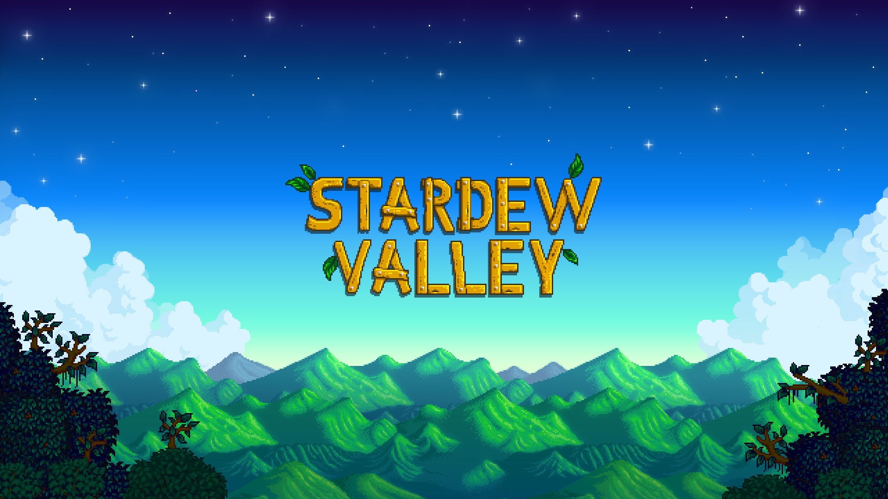
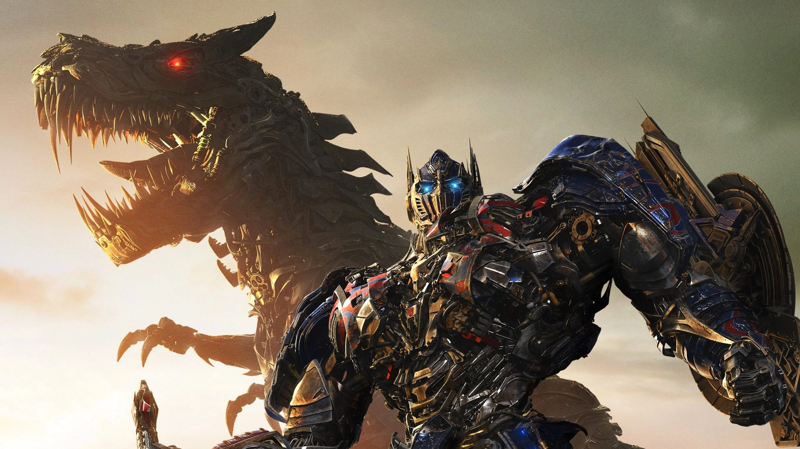
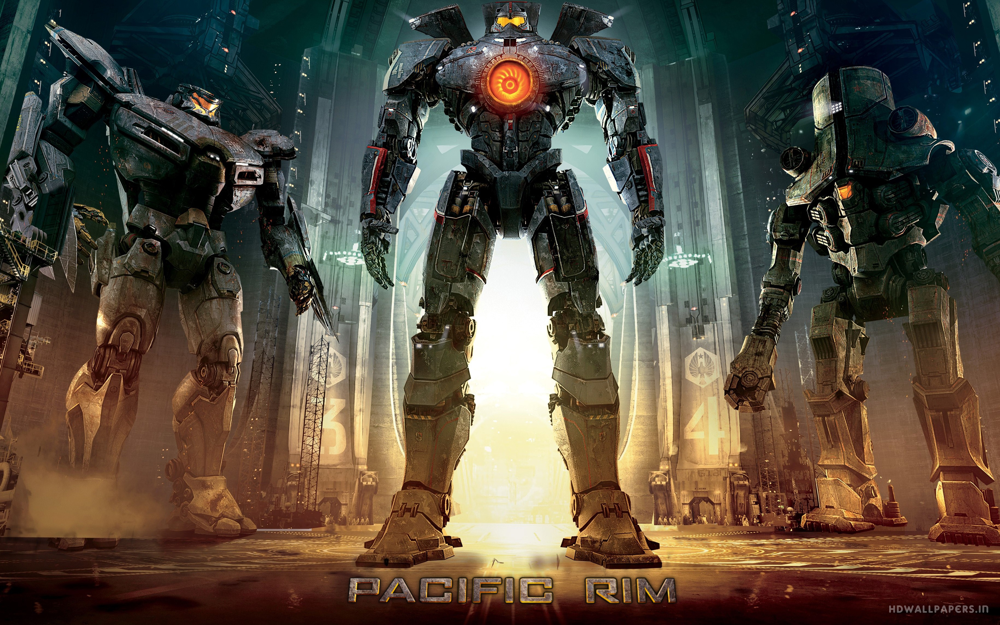
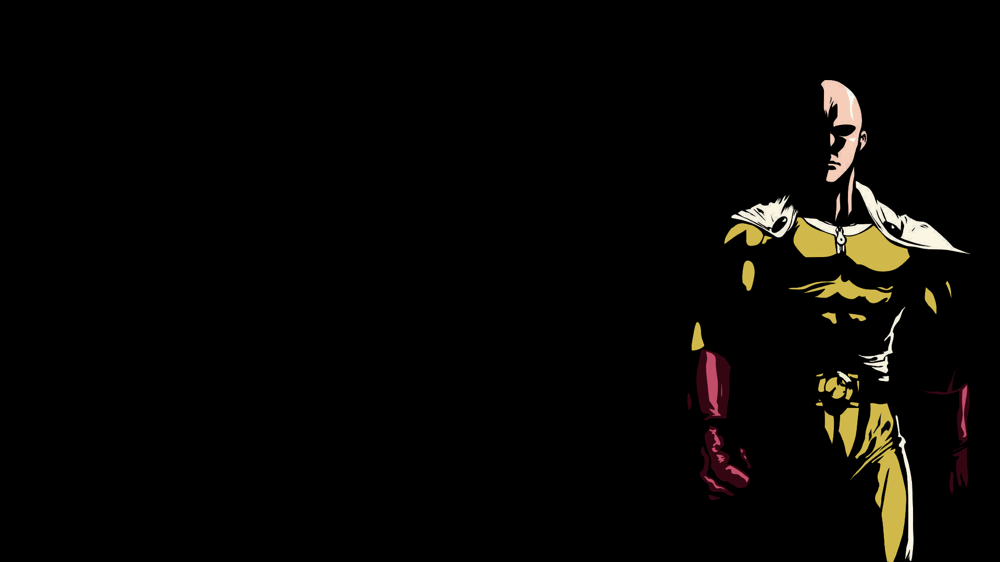
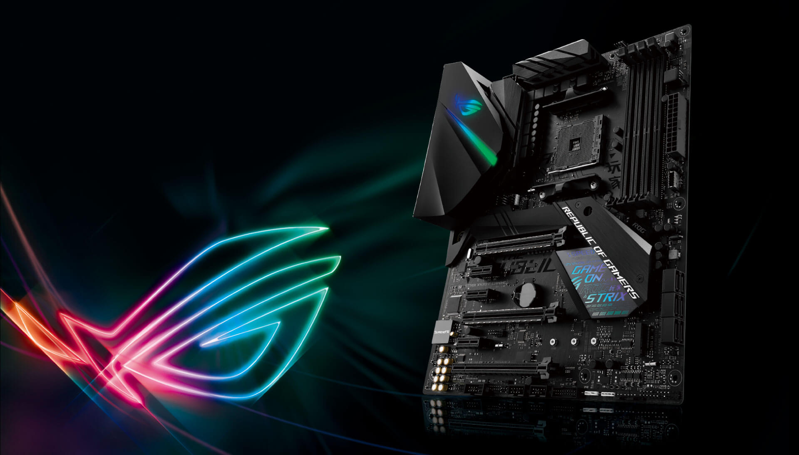

Valheim es un próximo videojuego de supervivencia y sandbox del desarrollador sueco Iron Gate Studio y publicado por Coffee Stain Studios. Se lanzó en acceso anticipado el 2 de febrero de 2021 para Linux y Windows a través de Steam, y se lanzará para Xbox One y Xbox Series X/S en 2023.
Trailer Valheim
Stardew Valle

Stardew Valley es un videojuego indie de simulación de granja desarrollado por Eric "ConcernedApe" Barone y publicado por Chucklefish Games. El juego se lanzó en primer lugar para Windows el 26 de febrero de 2016, y luego para los sistemas operativos OS X y Linux.
Trailer Stardew Valley
Peliculas
Transformers

Dos razas de robots extraterrestres transformables llegan a la tierra en busca de una misteriosa fuente de poder. En la guerra que estalla entre las dos razas sam witwicky se convierte en la clave de una guerra que puede destruir a la humanidad.
Trailer Transformers
Pacific Rim

Hace mucho tiempo, legiones de criaturas monstruosas llamados Kaiju surgen del mar, llevando consigo una guerra. Para pelear a los Kaiju, la humanidad desarrolla robots gigantes llamados Jaegers, diseñados para ser dirigidos por dos humanos. Sin embargo, ni los Jaegers son suficientes para vencer a Kaiju, y la humanidad está al borde de la derrota. La última esperanza de la humanidad descansa en un ex-piloto fracasado, una aprendiz y un viejo y obsoleto Jaeger.
Trailer Pacific Rim
Animes
One Punch Man

Saitama es un poderoso superhéroe calvo que derrota fácilmente a los monstruos u otros villanos con un único golpe de su puño. Debido a esto, Saitama ha encontrado aburrida su fuerza y siempre está tratando de encontrar rivales más poderosos que le puedan igualar.
Cuando un popular MMORPG anuncia su cierre definitivo, el veterano jugador Momonoga decide quedarse en él hasta el mismo cierre, sin salir. El problema es que pasa la hora de cierre y él no se desconecta, pero los NPC han ganado conciencia propia. ¿Está atrapado?
Las GeForce RTX™ 3090 Ti y 3090 son grandes GPU fuertes (BFGPU) con rendimiento de la clase TITAN. Con tecnología Ampere, la arquitectura RTX de segunda generación de NVIDIA, duplican el trazado de rayos y el rendimiento de la IA con núcleos de trazado de rayos mejorados, núcleos Tensor y nuevos multiprocesadores de streaming. Además, presenta unos asombrosos 24 GB de memoria G6X para ofrecer la experiencia de gaming definitiva a jugadores y creadores.
Trailer RTX3090
Asus Strix 470x-F

La ROG Strix X470-F Gaming ofrece una combinación perfecta de rendimiento y estilo en formato ATX. Concebida para usuarios que buscan experiencias de juego avanzadas y un estilo refinado, la Strix X470-F Gaming viene equipada con ajustes muy fáciles de usar, una estética elegante a la par que sobria y funciones de personalización con las que podrás montar un equipo tan llamativo como quieras.